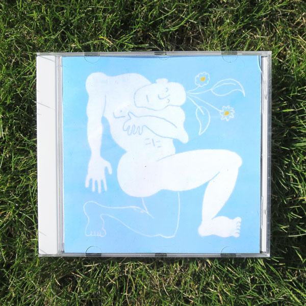

This music is my gift to you.
It is an attempt to trace my experience, and from that give to you what I can, in the hope that it mirrors something in you and your experience. I hope you come away a little bit more connected to me, and maybe even, in my own small way, to the whole of everything.
Songs of Myself
My life's work. This is an album that will change and grow with me, as I add new songs, change old ones, and prune the ones that no longer represent me.
I wanted to make a fresh start in my Jesus year, be done with the pseudonym's I'd hidden behind before, and make music that felt like it honestly came from who I am as a person. As I figure the more honest I can be with music, the more meaningful it can be to whoever listens to it.
I didn't want to have to make a whole new album to present new music, as this inevitably requires including songs that aren't quite your best, but a single song seems insignificant and lonely. So I thought I could have one album that I added to as I wrote new songs, and represented the best of my ability. I was inspired by my endless, majestic hero Walt Whitman, who kept adding to his poetic opus 'Leaves of Grass' for as long as he lived.
Rural Loaf
'Rural Loaf' was an album I made in 2020, after a period of life where my soul was particularly unmoored, seeking out happiness wherever it could be found. I had a great time loafing around in the rural backwaters of Britain and New Zealand, and this album is as close to a faithful document of that time as I could make.
The music has a simple grounding, mostly guitar and vocals, that have then been stretched and sculpted into an orchestra of manipulated electronic sounds that serve as an extension of the emotional content.
Crumbs of Heaven
I made 'Crumbs of Heaven' in 2018. In retrospect it was during a time of regression and healing, and the album was either representative of escaping into a somewhat false fantasy of happiness; or of an actual finding of happiness, wherever it could be gleaned during a time of deep and confusing grief.
The music is simple and unmanipulated, consisting of my voice, my grandad's old guitar, a bass, a flute, and a few different FM keyboards. During recording I liked to think of the instrumental embellishments as 'painting upon the canvas of the song'.